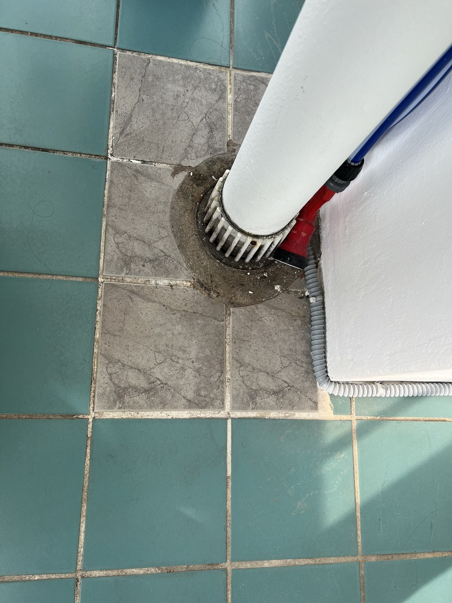
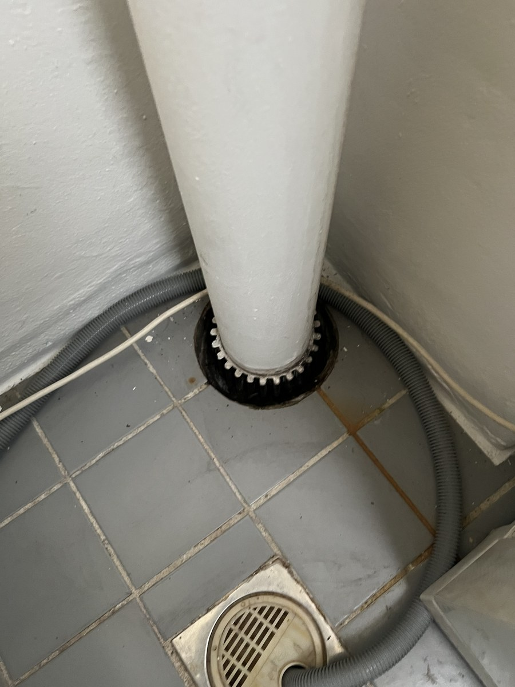
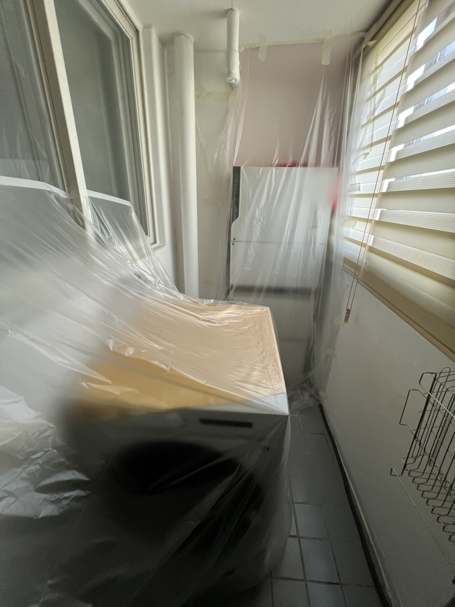
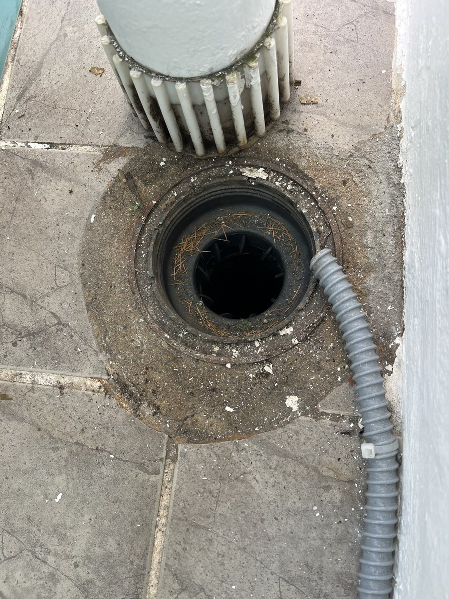
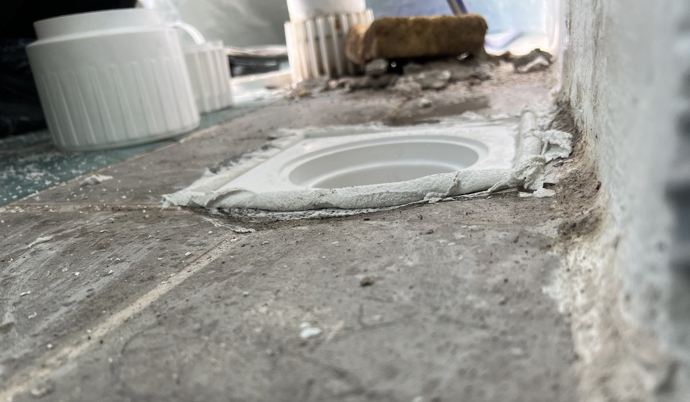

대전 월평동 월평타운 앞·뒤 베란다 우수관 하부 부속 교체｜아랫집 누수로 손본 첫 번째 세대

현장 작업 한눈에 보기
- 현장
- 월평타운 첫 번째 세대 · 앞·뒤 베란다 우수관 2곳
- 문제
- 아랫집에 물이 떨어지고 도장(페인트)이 벗겨짐
앞·뒤 베란다 우수관 아래 주름진 하부 부속, 앞 베란다 바닥의 둥근 자국 - 작업
- 보양 · 관 분리 · 바닥 사각 절단
하부 부속 교체(새 바닥 부속·사각 받침) · 우수관 재연결 · 천장 쪽 연결부 다시 설치 - 결과
- 새 바닥 부속(앞)과 하부 마감(뒤) 사진 확인
통수 결과·작업 시간은 미기재
대전 서구 월평동 월평타운 한 세대의 앞·뒤 베란다 우수관 작업입니다. 아랫집에 물이 떨어지고 도장(페인트)이 벗겨지는 누수가 있어, 2026년 11월 26일 앞 베란다와 뒤 베란다 두 곳을 손봤습니다. 같은 날 손본 두 세대 가운데 첫 번째 집입니다. 우수관 아래 하부 부속을 흰색 새 부속과 사각 받침으로 교체하고, 천장 쪽 연결부는 다시 설치했습니다. 실제 사진 6장으로 소개합니다.
1. 작업 전 — 앞 베란다 우수관 아래
대전 서구 월평동 월평타운 한 세대의 앞·뒤 베란다 우수관을 손봤습니다. 아랫집에 물이 떨어지고 도장(페인트)이 벗겨지는 누수가 있어 맡은 작업입니다. 2026년 11월 26일 같은 단지 두 세대를 하루에 차례로 작업했고, 이 글은 그 가운데 첫 번째 세대입니다. 앞 베란다(거실 창 쪽)와 뒤 베란다(세탁기 쪽) 두 곳을 손봤습니다. 두 번째 세대 기록은 아래 관련 글에 따로 올렸습니다.
먼저 작업 전 앞 베란다입니다. 우수관이 바닥으로 들어가는 자리에 주름진 하부 부속이 끼워져 있고, 둘레 바닥에는 둥글게 짙은 자국이 있습니다.

2. 작업 전 — 뒤 베란다 우수관 아래
뒤 베란다(세탁기 쪽)입니다. 우수관 아래에 검은색 주름 부속이 끼워져 있습니다. 6번 사진이 이 자리의 작업 뒤 모습입니다.

3. 보양
작업 전에 세탁기와 둘레를 비닐로 덮어 두었습니다.

4. 우수관을 빼낸 바닥 연결부
앞 베란다 우수관 아래를 바닥에서 빼내자 바닥 속 연결부 입구가 드러났습니다. 둥근 입구 안쪽에 가는 이물질이 걸려 있는 것이 보입니다.

5. 하부 부속 교체 — 새 바닥 부속 놓기
연결부 둘레 바닥을 사각으로 잘라 내고 안쪽을 정리한 뒤, 그 자리에 흰색 새 바닥 부속을 놓고 둘레를 메웠습니다. 뒤쪽에 교체할 흰색 새 부속들이 놓여 있습니다.

6. 뒤 베란다 마감 — 2번 사진과 같은 자리
2번 사진의 뒤 베란다를 작업한 뒤 모습입니다. 검은색 주름 부속이 있던 자리를 흰색 부속으로 감싸고 사각 받침을 깔아 마감했습니다.
7. 확인한 범위와 상담 안내
이번 기록은 사진과 작업 메모로 확인되는 범위입니다. 앞 베란다는 작업 전부터 새 바닥 부속을 놓는 단계까지, 뒤 베란다는 작업 전과 마감 모습을 사진으로 남겼습니다. 우수관 위쪽 천장 연결부도 다시 설치했습니다. 통수 결과와 작업 시간은 자료가 없어 적지 않았습니다.
같은 날 손본 두 번째 세대와 같은 단지 다른 세대의 세탁실 우수관 보수 기록은 아래 관련 글에서 볼 수 있습니다. 베란다 우수관 아래 바닥에 얼룩이 번지거나 아랫집 천장에 물 자국이 보이면, 우수관 아래 바닥 연결부와 위쪽 천장 연결부, 물 자국을 각각 찍어 상담해 주세요.